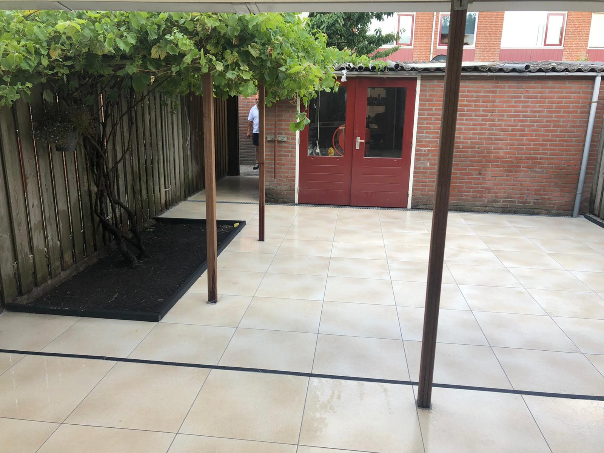
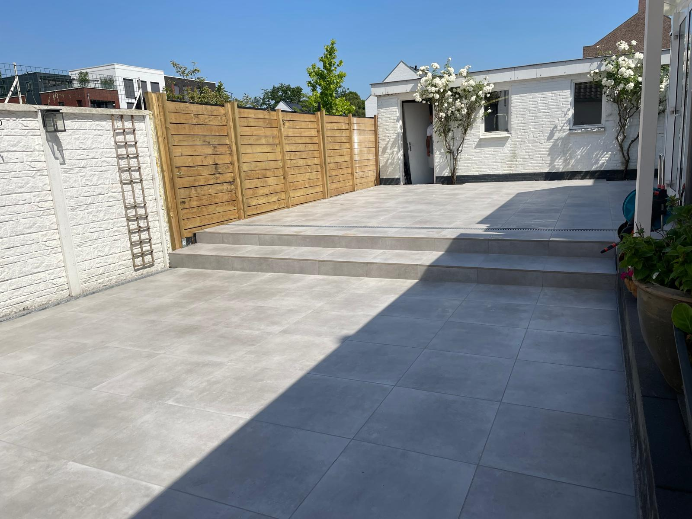
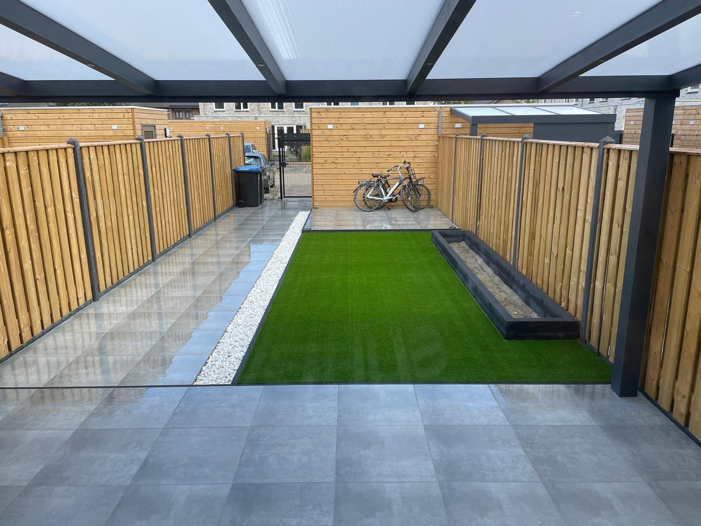
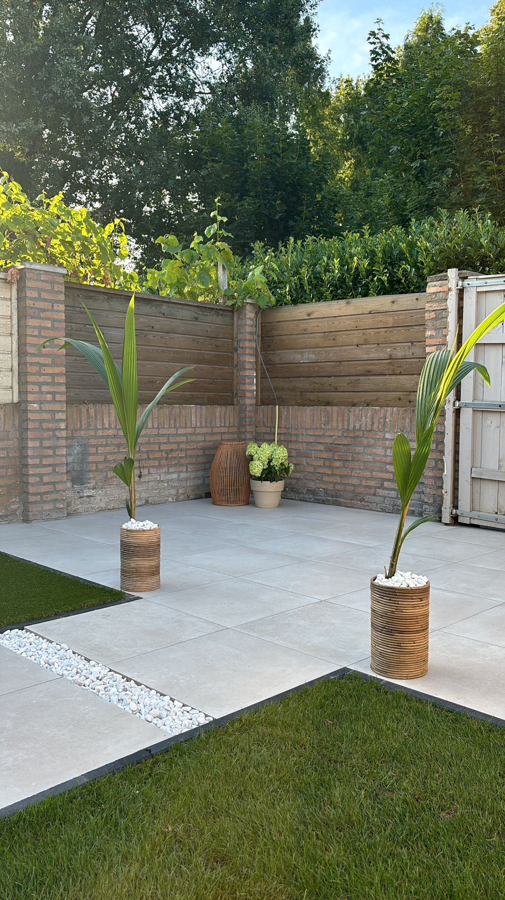
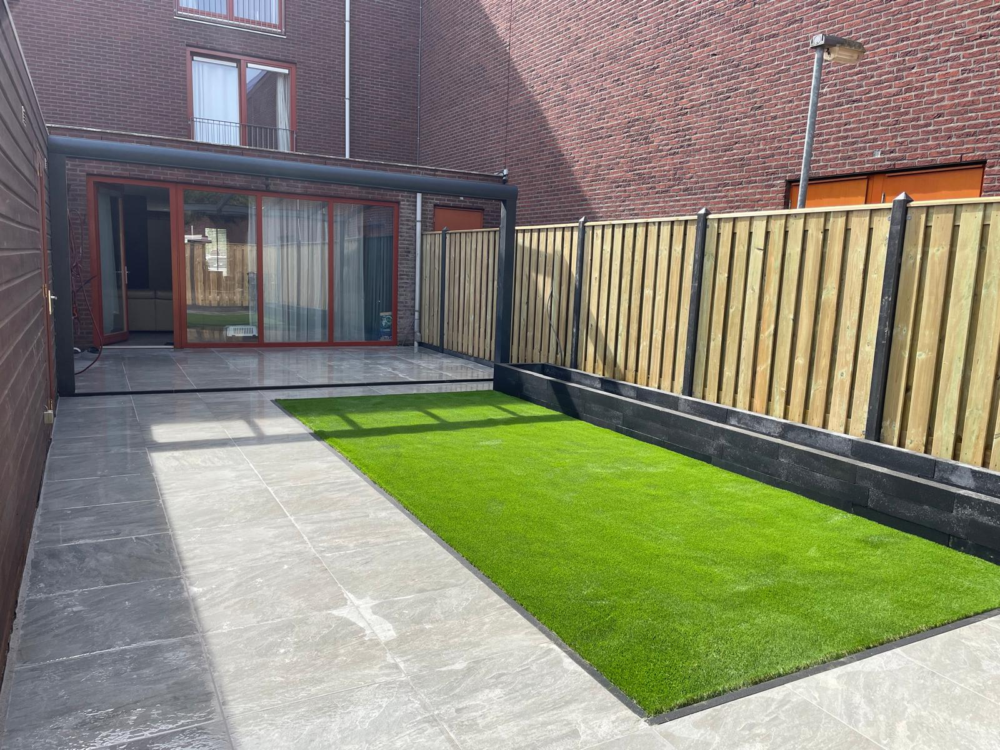

Ons werkOur workIslerimiz
Gerealiseerde projectenCompleted projectsTamamlanan projeler


Tuinbestrating, terras aanleg en complete tuinrenovatie van A tot Z in Eindhoven.
Garden paving, terrace and complete garden renovation from A to Z in Eindhoven.
Eindhoven'da A'dan Z'ye bahçe döşemesi, teras yapımi ve komple bahçe yenileme.




Tuinbestrating aanleggen is bij ons maatwerk en ontzorging van A tot Z. Een klein spoedklusje of een complete tuinrenovatie? Wij zorgen altijd voor een strak en duurzaam resultaat. Van het uitgraven en opbouwen van de juiste onderlaag tot het leggen en voegen van keramische tegels of andere bestrating: alles wordt vakkundig geregeld.
Van een terras tot oprit of complete tuinrenovatie. Wij ontzorgen voor 110% en streven vanuit onze passie altijd voor een dikke tien.
Garden paving is fully custom work from A to Z. A small urgent job or a complete garden renovation? We always ensure a neat and durable result. From excavating and building the right base to laying and grouting ceramic tiles or other paving: everything is handled professionally.
From a terrace to a driveway or complete garden renovation. We take care of everything 110% and always strive for perfection with passion.
Bahçe döşemesi bizde A'dan Z'ye tam özel yapım ve hizmet demektir. Kucuk bir acil is mi yoksa komple bahçe yenileme mi? Her zaman duzgun ve kalici bir sonuc saglariz.
Bir teresten araba yoluna veya komple bahçe yenilemeye kadar. Her seyi yuzde 110 ustleniyoruz.
Een goede onderlaag is essentieel. Wij graven uit, egaliseren en leggen de juiste fundering.
A good base is essential. We excavate, level and lay the right foundation.
Iyi bir alt tabaka kalici sonuc icin esastir. Kaziyor, duzlestirir ve dogru temeli atiriz.
Van keramische tegels tot betonklinkers, kinderkopjes of natuursteen.
From ceramic tiles to concrete pavers, cobblestones or natural stone.
Seramik karolardan beton doseme tasina, kaldırim tasi veya dogal tasa kadar.
Wij zorgen voor een correcte waterafvoer zodat u nooit last heeft van wateroverlast.
We ensure proper water drainage so you never suffer from water nuisance.
Bahçenizde su sorunu yasamamamaniz icin dogru su drenaji saglariz.
Na het leggen voegen wij alles netjes af voor een strak en professioneel eindresultaat.
After laying we neatly grout everything for a neat and professional end result.
Döşemeden sonra yillarca dayanacak duzgun ve profesyonel bir son sonuc icin derzliyoruz.
Wij bespreken uw wensen en bekijken de tuin. Volledig gratis en vrijblijvend.
We discuss your wishes and look at the garden. Completely free and no-obligation.
Isteklerinizi tartisir ve bahçeyi inceleriz. Tamamen ücretsiz.
Wij maken een gedetailleerd ontwerp en advies voor uw ideale tuinbestrating.
We create a detailed design and advice for your ideal garden paving.
Ideal bahçe dosemeniz icin ayrintili tasarım ve danışma hazirlariz.
Wij graven uit, leggen de onderlaag en plaatsen de bestrating vakkundig.
We excavate, lay the base and install the paving professionally.
Kaziyoruz, alt tabakayı atiyoruz ve dosemeyi ustaca yerlestiriyoruz.
Na de eindcontrole leveren wij het project op. U geniet van uw nieuwe tuin!
After the final inspection we hand over the project. Enjoy your new garden!
Son kontrolun ardindan projeyi teslim ediyoruz. Yeni bahçenizin keyfini cikarin!

Wij nemen binnen 24 uur contact met u op.We will contact you within 24 hours.24 saat içinde sizinle iletişime geçiyoruz.